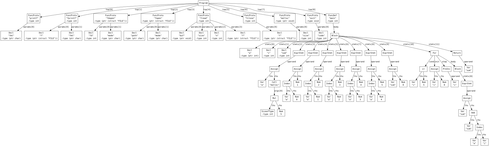
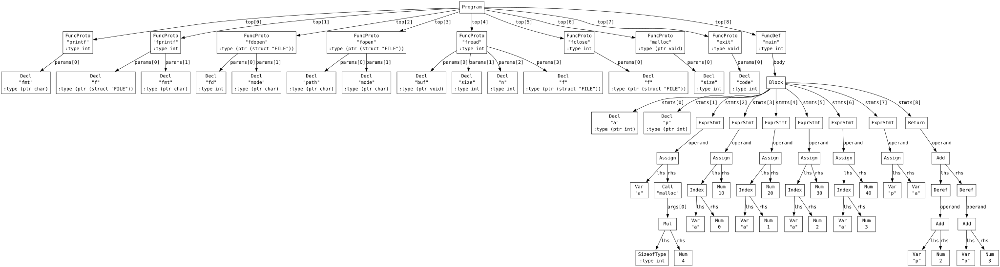
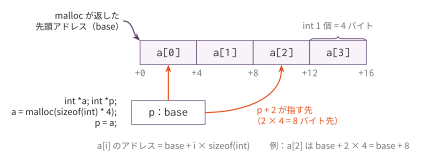

コマ9: ポインタ演算とスケーリング
今日のゴール
コマ8 で入れた型サイズを使って、ポインタ演算・sizeof(型名)・添字 p[i] を実装する。
コマ8 で、コンパイラは変数の型を覚え、型サイズで命令を選べるようになった。 その型サイズには、もう一つの使い道がある。ポインタを進めるときの尺度である。
int *p;
p + 2; // 2バイト進むのではなく、2 * sizeof(int) バイト進むこの回では、次の3つを実装する。
| 機能 | 例 |
|---|---|
| ポインタ演算 | p + 2, p - 1 |
sizeof(型名) |
sizeof(int) |
| 添字 | p[i]（*(p + i) の略記） |
新しい概念は「スケーリング（要素サイズ倍）」と「多段ポインタ」の2つで、
どちらもコマ8 の size_of_ty_str / elem_ty_str の上に載る。
この回で扱う範囲
この言語に配列はない。連続した int の並びが必要なときは、
malloc(sizeof(int) * N) で確保したヒープ上の領域をポインタで指して使う。
malloc は、指定されたバイト数ぶんの領域を確保して、その先頭アドレスを返すライブラリ関数である。
自作はしない。コンパイラから見れば普通の関数呼び出しなので、
コマ6 で実装済みの関数呼び出しがそのまま使える。
実体はリンク時に libc の malloc に解決される。
この回のテストプログラムは、先頭に次の1行を置く。
#include "lib.h"scaffold/lib.h は提供物で、malloc などの宣言が書いてある。
この行がないと、Parser は malloc という名前を知らないまま呼び出しを読むことになる。
今はこの1行を「そう書くもの」として置いてよい。
#include が何をしているか（ファイルの中身をその場に展開する）はコマ10 で、
自作ヘッダを含む一般の展開規則はコマ14 で扱う。
構造体、連結リストの本格的な利用、グローバル変数は後の回で扱う。
この回までの言語仕様（EBNF）
この回までに書けるプログラムの文法を、累積の形でまとめる。
記法と最終形の全体像は
language_spec.md の「形式文法（EBNF）」を参照。
#include はこの回から書くが、指令行（行頭の # から改行まで）は構文解析より前に処理されるため、
以下の include_dir 以外の規則には現れない。この回で書けるのは提供物の lib.h の取込みだけで、
自作ヘッダと入れ子の取込み、#define はコマ14 で扱う。
include_dir ::= '#' 'include' '"' FILENAME '"' NEWLINE /* #define はコマ14 */
stars ::= '*' { '*' }
scalar_type ::= 'int' [ stars ]
| 'char' [ stars ] /* struct はコマ11、void * はコマ12 */
obj_type ::= scalar_type /* struct Tag はコマ12 */
ret_type ::= scalar_type
| 'void'
type_name ::= obj_type
program ::= external_decl { external_decl }
external_decl ::= func_proto
| func_def /* struct 定義はコマ12、グローバル変数はコマ13 */
var_decl ::= obj_type IDENT ';'
param ::= scalar_type IDENT
param_list ::= param { ',' param }
func_proto ::= ret_type IDENT '(' [ param_list ] ')' ';' /* '...' はコマ10 */
func_def ::= ret_type IDENT '(' [ param_list ] ')' func_body
func_body ::= '{' { var_decl } { stmt } '}'
stmt ::= expr_stmt
| block
| if_stmt
| while_stmt
| for_stmt
| 'break' ';'
| 'continue' ';'
| 'return' [ expr ] ';'
expr_stmt ::= [ expr ] ';'
block ::= '{' { stmt } '}'
if_stmt ::= 'if' '(' expr ')' stmt [ 'else' stmt ]
while_stmt ::= 'while' '(' expr ')' stmt
for_stmt ::= 'for' '(' [ expr ] ';' [ expr ] ';' [ expr ] ')' stmt
expr ::= assign_expr
assign_expr ::= unary_expr '=' assign_expr /* 右結合 */
| cond_expr
cond_expr ::= binary_expr [ '?' expr ':' cond_expr ] /* 右結合 */
binary_expr ::= unary_expr { bin_op unary_expr }
bin_op ::= '*' | '/' | '%' /* 論理 && || はコマ13 */
| '+' | '-'
| '<' | '>' | '<=' | '>='
| '==' | '!='
unary_expr ::= postfix_expr
| '-' unary_expr
| '*' unary_expr
| '&' unary_expr
| '++' unary_expr
| '--' unary_expr
| 'sizeof' '(' type_name ')'
postfix_expr ::= primary_expr { postfix_suffix }
postfix_suffix ::= '[' expr ']' /* . と -> はコマ12 */
primary_expr ::= INT_LITERAL
| CHAR_LITERAL
| IDENT '(' [ arg_list ] ')'
| IDENT
| '(' expr ')'
arg_list ::= assign_expr { ',' assign_expr }この回までの二項演算子の優先順位（高い順）:
| 優先順位 | 演算子 | 結合 |
|---|---|---|
| 1（高） | * / % |
左 |
| 2 | + - |
左 |
| 3 | < > <= >= |
左 |
| 4 | == != |
左 |
表の読み方はコマ1の「木の形は規則で決まっている」と
language_spec.md の「演算子」を参照。
p + 1 の + はコマ2 から形が変わっていない。変わったのは意味（要素サイズ倍のスケーリング）だけである。
sizeof は型名形式のみで、sizeof(x) のように式を書くと構文エラーになる。
式形式の sizeof x は発展 L4 で扱う。
字句トークンの定義はどの回でも同じであるため、ここでは繰り返さない。
language_spec.md の「字句トークン」を参照。
AST を確認する: malloc 領域の添字アクセス
まず、malloc で確保した領域を添字で使うプログラムがどのような AST になるか確認する。
python3 scaffold/parse_viewer.py sessions/09_pointer_arith/tests/ptr_sum.cこのプログラムの内容は次の通り。
#include "lib.h"
int main() {
int *a;
int i;
int sum;
a = malloc(sizeof(int) * 5);
a[0] = 1;
a[1] = 2;
a[2] = 3;
a[3] = 4;
a[4] = 5;
sum = 0;
for (i = 0; i < 5; ++i) {
sum = sum + a[i];
}
return sum;
}実行すると、lib.h の関数プロトタイプが並んだ後に、次のような main が表示される。
(funcdef "main" :type int (params)
(block
(decl "a" :type (ptr int))
(decl "i" :type int)
(decl "sum" :type int)
(exprstmt
(assign (var "a")
(call "malloc"
(args
(mul (sizeof-type int) (num 5))))))
(exprstmt
(assign
(index (var "a") (num 0))
(num 1)))
...
(for
(init
(assign (var "i") (num 0)))
(cond
(lt (var "i") (num 5)))
(step
(preinc (var "i")))
(body
(block
(exprstmt
(assign (var "sum")
(add (var "sum")
(index (var "a") (var "i"))))))))
(return (var "sum")))))
a[i] は AST 上では (index (var "a") (var "i")) になる。
このノードは、*(a + i) と同じ意味で扱う。
sizeof(int) は (sizeof-type int) というノードになり、実行時ではなく
コンパイル時に値（4）が決まる。
AST を確認する: ポインタ演算
次に、領域の先頭アドレスを別のポインタに代入し、ポインタ演算で読む例を確認する。
python3 scaffold/parse_viewer.py sessions/09_pointer_arith/tests/ptr_arith.cこのプログラムの内容は次の通り。
#include "lib.h"
int main() {
int *a;
int *p;
a = malloc(sizeof(int) * 4);
a[0] = 10;
a[1] = 20;
a[2] = 30;
a[3] = 40;
p = a;
return *(p + 2) + *(p + 3);
}main の部分の S式は次のようになる。
(funcdef "main" :type int (params)
(block
(decl "a" :type (ptr int))
(decl "p" :type (ptr int))
(exprstmt
(assign (var "a")
(call "malloc"
(args
(mul (sizeof-type int) (num 4))))))
...
(exprstmt
(assign (var "p") (var "a")))
(return
(add
(deref
(add (var "p") (num 2)))
(deref
(add (var "p") (num 3))))))))
p + 2 は、単にアドレスに 2 を足すのではない。
p は int * なので、2 * sizeof(int)、つまり8バイト進む。
sizeof(型名) のコード生成
sizeof は値を計算する式だが、実行時にメモリを読む必要はない。
型名から size_of_ty_str() でサイズを求め、即値として出力するだけでよい。
def codegen_SizeofType(self, node):
self.emit(f' li a0, {self.size_of_ty_str(node.ty_str)}')malloc(sizeof(int) * 5) のように、確保サイズの計算に使うのが典型的な用途である。
p[i] のコード生成
p[i] は、ポインタ p の値に i * 要素サイズ を足した場所を表す。
address(p[i]) = value(p) + i * sizeof(element)
要素1つは sizeof(int) = 4 バイトなので、p + 2 はアドレスを 8 バイト進める。
この倍率を決めるために、要素型のサイズが必要になる。
lvalue としての p[i] は、次の流れでアドレスを作る。
self.codegen(node.lhs) # p の値（領域の先頭アドレス）
push a0
self.codegen(node.rhs) # 添字 i
scale by element size
pop a1
add a0, a1, a0 # a0 = base + i * sizervalue としての p[i] は、このアドレスから値を読む。読む幅は要素型で決まるので、
コマ8 の _load_ty をそのまま使う。
ポインタ演算
p + n では、n に要素サイズを掛けてからアドレスに加える。
| 式 | 実際に足す値 |
|---|---|
int *p; p + 2 |
2 * 4 |
char *p; p + 2 |
2 * 1 |
int **p; p + 2 |
2 * 8 |
self.elem_ty_str() がないと、この倍率を決められない。
p + 2 の型は p の型（int *）である。2 + p のように整数が左にある形も同じ意味なので、
どちらがポインタ側かを is_ptr_ty_str() で見分けて、整数側だけをスケールする。
前置 ++（コマ5）もこの回で型対応になる。++p は p を
「1 要素ぶん」、つまり指し先型のサイズだけ進める。
int や char の変数に対しては、これまで通り 1 だけ動く。
多段ポインタ
int **pp; のような多段ポインタも、ty_str の末尾の * を 1 つ剥がす
elem_ty_str() がそのまま働くので、専用の処理は要らない。
elem_ty_str("int**") は "int*" で、そのサイズは 8 である。
*pp は 8 バイトを読み、**pp はさらにその先の 4 バイトを読む、という具合に
段数ぶん _load_ty が重なるだけである。
int main(int argc, char **argv) というエントリポイントの形も、同じ仕組みで動く。
argv[0] は char *（8 バイト尺度）、*argv[0] は char（1 バイト）である。
編集するファイル
mycc.py
importlib でコマ8 の Codegen08 を継承した Codegen09 に、以下の機能を追加する。
スケルトンにあらかじめ書かれているものは次の通りで、実装対象ではない。 コマ8 で自分が実装したものと合わせて、呼び出して使う。
| 提供済み | 役割 |
|---|---|
size_of_ty_str(ty) / elem_ty_str(ty) / is_ptr_ty_str(ty) |
型サイズ・指し先型・ポインタ判定（コマ8 と同じ） |
_load_ty(ty) / _store_ty(ty) |
コマ8 で実装済みの型付きロード・ストア |
_push_a0() / _pop_into(reg) |
一時値の退避と復帰 |
_type_of_expr / _type_of_lval / codegen / codegen_lval の match |
各ハンドラへの振り分け（Index などを足した版） |
実装対象は次の通りである。
| 実装対象 | 役割 |
|---|---|
type_of_expr_Index / type_of_lval_Index |
p[i] の型を求める |
type_of_expr_Add / type_of_expr_Sub |
ポインタ ± 整数の結果型を求める |
_scale_index(elem_ty) |
添字 a0 に要素サイズを掛ける |
codegen_lval_Index(node) |
p[i] のアドレス計算 |
codegen_Index(node) |
p[i] の値（lval → _load_ty） |
codegen_Add / codegen_Sub |
ポインタ演算：整数側に要素サイズを掛ける |
codegen_SizeofType(node) |
sizeof(型名) を即値で出力 |
codegen_PreInc / codegen_PreDec |
前置 ++/-- を型対応にする（ポインタは要素サイズで進む） |
実装手順
- スケルトンの
Codegen09がCodegen08をimportlibで継承していることを確認する type_of_expr_Index/type_of_lval_Index/type_of_expr_Add/type_of_expr_Subを埋める_scale_indexとcodegen_lval(node)の'Index'handler を実装する（a0 = base + i * elem_size）codegen(node)の'Index'handler を実装する（lval →_load_ty）codegen(node)の'SizeofType'handler を実装する（翻訳時定数）codegen(node)の'Add'/'Sub'handler でポインタ演算を実装するcodegen_PreInc/codegen_PreDecを型対応にするptr_to_ptr.c（多段ポインタ）・main_argv.c（main(int argc, char **argv)）を通す
（2〜7 が正しくできていれば新しく書く処理はない。取りこぼしの検出用である。）
tests/
機能単位で切ったテストを先に置いてある。上から順に通していくと、 どこで詰まっているかが1機能ぶんに絞られる。「通る目安」は実装手順の番号である。
| ファイル | 内容 | 主に見る実装 | 通る目安 | 期待値 |
|---|---|---|---|---|
index_scale.c |
a[i] のアドレス計算を要素サイズ 1/4/8 で確かめる |
_scale_index / codegen_lval_Index / codegen_Index |
手順3〜4 | 42 |
sizeof_type.c |
sizeof(型名) だけを単体で確かめる |
codegen_SizeofType |
手順5 | 40 |
ptr_sum.c |
malloc 領域を a[i] で合計 |
添字＋ループ | 手順6 | 15 |
ptr_arith.c |
*(p + 2) と *(p + 3) |
codegen_Add / codegen_Sub |
手順6 | 70 |
ptr_incdec.c |
++/-- が int * は4、char * は1、int は1だけ動くこと |
codegen_PreInc / codegen_PreDec |
手順7 | 104 |
ptr_to_ptr.c |
多段ポインタ int **（&/* の重ね掛けと 8 バイト尺度） |
取りこぼし検出 | 手順8 | 20 |
main_argv.c |
int main(int argc, char **argv) 形のエントリポイント |
取りこぼし検出 | 手順8 | 41 |
テスト
python3 scaffold/test_runner.py sessions/09_pointer_arithtests/ptr_sum.c がコンパイルでき、終了コード 15 になれば基本形は成功。
個別に動かす場合は、次のようにする。
python3 sessions/09_pointer_arith/mycc.py sessions/09_pointer_arith/tests/ptr_sum.c \
| riscv64-linux-gnu-gcc -x assembler -static - -o out
qemu-riscv64 ./out
echo $?注意
この言語に配列はない。int a[10]; のような宣言は書けず、p[i] も *(p + i) の略記でしかない。
連続した領域が必要なときは malloc(sizeof(int) * N) で確保し、ポインタで指して使う。
スケールするのは整数側だけである。p + 2 で p の値まで 4 倍すると、
アドレスそのものが壊れる。どちらがポインタかは型で決まる。
sizeof(型名) は翻訳時に決まる定数で、実行時にメモリを読まない。
sizeof(式) の形はこの言語にはなく、コマ12 で sizeof(struct タグ名) を足すまで、
引数に書けるのは int / char / ポインタの型名だけである。
char *p; ++p は 1 バイト、int *p; ++p は 4 バイト、int **p; ++p は 8 バイト進む。
int n; ++n はこれまで通り 1 である。+ 1 を固定で出していると ptr_incdec.c で落ちる。
ここまでで着手できる発展課題
ポインタ演算まで進んだので、ポインタ同士の引き算に意味を足す
L1 に着手できる。
sizeof を式にも広げる L4 は、
構造体まで進んだコマ12 以降に着手できる。
生成したアセンブリでポインタ演算のアドレス計算を1命令ずつ確認したいときは、RV64 シミュレータ に貼り付ける。
この回の完成形に相当する OCaml 版参考実装が ../../workbook/ocaml/README.md にある。完成相当の実装なので、まず自分の実装方針を検討してから確認すること。